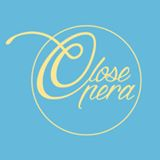
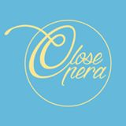

Speelseizoen sept 2021-juli 2022
Opera/Concerten Koor
- “Klassiek in de Stad”, gratis openluchtconcert met Opera Vlaanderen, Sint-Jansplein Antwerpen, 5 september 2021 om 11u30.
- “Schubert ‘Unvollendete’” (F. Schubert, J. Mc Milan, J. Brahms), Openingsconcert met Vlaams Radio Koor en Brussels Philharmonic, Flagey Brussel, 11 september 2021 om 20u15.
- “Visioni ed Estasi” (W. Henderickx), World Choir Games, Sint-Pauluskerk Antwerpen, 3 november 2021.
- “La Bohème” (G. Puccini), met Opera Vlaanderen, in Opera Antwerpen, december 2021 en in Opera Gent, januari 2022.
- “Roméo et Juliette” (H. Berlioz), concertant met Opera Vlaanderen, in deSingel Antwerpen, 24 februari en in De Bijloke Gent, 27 februari 2022.
- “C(H)OEURS 2022”, met Opera Ballet Vlaanderen olv Alain Platel, in Opera Antwerpen, maart 2022, in Opera Gent, april 2022, in Opera de Lille, juni 2022.
- "Dixit Dominus" (G.F. Händel), met Vlaams Radio Koor, in Hasselt, Leuven, Brussel, Oostende en Parijs, 20-30 mei 2022.
- “Les Huguenots” (G. Meyerbeer), met de Munt/La Monnaie, Opera Brussel, juni en juli 2022.
Solo-Concerten
- "Casta Diva" opera recital, in Quatre Mains, Kwaadham Gent, 16 oktober 2021.
Speelseizoen sept 2020-juli 2021
Opera Koor
- “Tosca” (G. Puccini), met de Munt/La Monnaie, Opera Brussel, juni en juli 2021.
Speelseizoen sept 2019-juli 2020
Opera/Concerten Koor
- "Don Carlos" (G. Verdi), met Opera Vlaanderen, sept-okt 2019, Opera Antwerpen en Gent.
- "Amadeus", concert met Vlaams Radio Koor en Brussels Philharmonic, 13 en 14 sept 2019, Flagey Brussel.
- "Messa di Requiem" (G. Verdi), concert met Opera Vlaanderen, 5 en 8 okt 2019, Opera Gent en deSingel Antwerpen.
- "Macbeth" (G. Verdi), met Opera Vlaanderen, november 2019, Opera Gent en Opera Groothertogdom Luxemburg.
- "Der Schmied von Gent" (F. Schreker), met Opera Vlaanderen, feb-maart 2020, Opera Antwerpen en Gent.
- "Via Crucis" (B. Britten en F. Liszt), concert met het Koor van de Munt/La Monnaie, 15 februari 2020, Dominicanankerk Brussel.
- "C(H)OEURS 2020", met Opera Vlaanderen, maart-april 2020, Opera Gent en Antwerpen. (geannuleerd)
- "9th Symphony" (L. v. Beethoven), concert , 2 en 3 en 8 mei 2020, Concertgebouw Mechelen, Antwerpen en Rotterdam. (geannuleerd)
- "2nd Symphony" (G. Mahler), concert met Vlaams Radio Koor en Nederlands Omroepkoor, 9 mei 2020, Concertgebouw Amsterdam. (geannuleerd)
- "C(H)OEURS 2020", met Opera Vlaanderen, 12 juli 2020, Athene. (geannuleerd)
Speelseizoen sept 2018-juli 2019
Opera/Concerten Koor
- "Klassiek in de Stad", met Opera Vlaanderen, 2 sept 2018, openluchtconcert om 11u30 op St.-Jansplein, Antwerpen.
- "Lohengrin" (R. Wagner), met Opera Vlaanderen, sept-okt 2018, Opera Gent en Antwerpen.
- "For the Fallen", concert met Vlaams Radio Koor en Brussels Philharmonic, 16 nov 2018, Flagey Brussel.
- "Les Pêcheurs de perles" (G. Bizet), met Opera Vlaanderen, dec 2018-jan 2019, Opera Antwerpen en Gent.
- "Cardillac" (P. Hindemith), met Opera Vlaanderen, februari-maart 2019, Opera Antwerpen en Gent.
- "La Juive" (J. Halévy), met Opera Vlaanderen, maart-april 2019, Opera Antwerpen en Gent.
- "Les Pêcheurs de perles" (G. Bizet), met Opera Vlaanderen, mei 2019, Opera Groothertogdom Luxemburg.
- "Macbeth" (G. Verdi), met Opera Vlaanderen, juni-juli 2019, Opera Antwerpen.
Solo-Concerten
- "Ganymed goes Brussels", Performance, 11,18, 25 okt; 8, 15, 22 nov; 11 dec '18, Museum voor Schone Kunsten Brussel. https://fine-arts-museum.be/nl/ganymedgoesbrussels

Speelseizoen sept 2017-juni 2018
Opera/Concerten Koor
- "Das Wunder der Heliane" (E. Korngold), met Kunsthuis Opera Vlaanderen, 15 sept t/m 10 okt 2017, Opera Gent en Antwerpen.
- Benefietconcert "Kom op tegen kanker", met Kunsthuis Opera Vlaanderen, 15 okt 2017, Opera Antwerpen.
- "Le Duc d'Albe" (G. Donizetti/G. Battistelli), met Kunsthuis Opera Vlaanderen, 17 nov t/m 6 dec 2017, Opera Gent.
- Concert "Songs for the Crossing" (Jeroen D'Hoe), met Vlaams Radio Koor en Brussels Philharmonic Orchestra, 15 december 2017, Flagey Brussel.
- Concert "Rossini-gala", met Kunsthuis Opera Vlaanderen, 6 jan 2018, Koningin Elisabethzaal Antwerpen.
- "Cavalleria rusticana" (P. Mascagni) & "Pagliacci" (R. Leoncavalli), met De Munt/La Monnaie, 6 maart t/m 22 maart 2018, Opera Brussel.
- "Lohengrin" (R. Wagner), met De Munt/La Monnaie, 19 april t/m 6 mei 2018, Opera Brussel.
- Concert "Leonard Bernstein: 100 years of magic", met Vlaams Radio Koor en Brussels Philharmonic Orchestra, 30 mei 2018, Bozar Brussel.
Solo-Concerten
- "Les Adieux", Lieder- en poëzie-avond met CloseOpera, 24 november 2017, 20u Kunstcafé Huset Gent.
- "Carmen meets Zarzuela", met CloseOpera, 4 december 2017, 20u CC De Kleine Beer, Beernem.
- "Broadway Nieuwjaarsconcert", met CloseOpera, 14 januari 2018, 15u Kunstcafé Huset Gent.
- "Carmen meets Zarzuela", met CloseOpera, 28 maart 2018, Pop-up bar Opera Antwerpen.
Speelseizoen sept 2016- juli 2017
Opera/Concerten Koor
- "Klassiek in de Stad", met de Vlaamse Opera, 4 sept 2016 om 11u30 gratis openluchtconcert op St Jansplein te Antwerpen.
- "Paulus" (F. Mendelssohn), met de Vlaamse Opera, 24 sept 2016 in Carolus Boromeus Kerk Antwerpen, 25 sept 2016 in SInt-Pieterskerk Gent.
- "Der Fliegende Höllander" (R. Wagner), met de Vlaamse Opera, Antwerpen en Gent, oktober-november 2016.
- "Die Zauberflöte" (W.A.Mozart), met de Vlaamse Opera, Antwerpen en Gent, december 2016-januari 2017.
- "The Mysteries of Light" (J. MacMillan), met VRK, Flagey Brussel en Bijloke Gent, 23-24 feb 2017
- "Simon Bocanegra" (G.Verdi), met de Vlaamse Opera, Antwerpen, Gent en Luxemburg, feb-maart 2017.
- "Aïda" (G. Verdi), met de Munt/La Monnaie, Brussel, mei-juni 2017.
- "Sadko" (N. Rimsky-Korsakov), met de Vlaamse Opera, Gent, juni-juli 2017.
Solo-Concerten
- "The Grand Diva Night" met CloseOpera:
- CC Cinema Alberg, Achel 19 november 2016
- CC Den Blank, Overijse 15 december 2016
- CC Het Aambeeld, Aartselaar 1 juni 2017
 

- "L'Adoration du Soleil" Gentse Feesten met CloseOpera:
- "Carmen meets Zarzuela" 21 juli 2017, 20u Kunstcafé Huset
- "Una Serata Italiana" 22 juli 2017, 20u Kunstcafé Huset
Speelseizoen sept 2015-juli 2016
Solo-Concerten
- "Nieuwjaarsconcert" met Bang-up! Opera, Kunstcafé Huset, Gent, 24 januari 2016 om 15u.
- "A Grand Opera Night/The Diva Night" met CloseOpera, Cultureel Centrum de Branding in Nieuwpoort, 18 februari 2016 om 20u.
- "A Grand Opera Night/The Diva Night" met CloseOpera, Cultureel Centrum de Warandepoort in Tervuren, 19 maart 2016 om 20u30.
- "A Grand Opera Night/The Diva Night" met CloseOpera, Cultureel Centrum de Tentakel in Zonnehoven, 20 maart 2016 om 17u.
- "A Grand Opera Night/The Diva Night" met CloseOpera, Cultureel Centrum Plomblom in Ninove, 14 april 2016 om 20u.
- "A Grand Opera Night/The Diva Night" met CloseOpera, Cultureel Centrum de Vieze Gasten in Gent, 30 april 2016 om 20u30.
- "Una serrata Italiana" benefietconcert voor/met CloseOpera, kunstcafé Huset, Gent, 25 juni om 20u.
- "Can you Händel it" met CloseOpera, Kunstcafé Huset, Gent, 19 juli 2016 om 20u.
- "Richard Strauss-night" met CloseOpera, Kunstcafé Huset, Gent, 23 juli 2016 om 20u.
Opera/Concerten Koor
- "Klassiek in de Stad", met de Vlaamse Opera, Openluchtconcert Antwerpen, 6 sept 2015 om 11u30.
- "Tanhäusser" (R. Wagner), met de Vlaamse Opera, Gent en Antwerpen, sept-okt 2015.
- "World Soundtrack Awards", met VRK olv Dirk Brossé, Kuipke Gent, 24 okt 2015.
- "Final Mystery" (Scrjabin/Nemtin), met VRK, Hilversum en Amsterdam, nov 2015.
- "The Messiah" (G.F. Haendl), met VRK olv Bart Van Reyn, Koninklijk Paleis Brussel,
- uitgezonden op 25 dec 2015 om 14u15 op tv één en om 21u05 op rtbf.
- "La Bohème" (G. Puccini), met de Vlaamse Opera, Antwerpen en Gent, dec-jan 2016.
- "Rachmaninov-happening", met VRK, De Singel, Antwerpen, 6 maart 2016.
- "Béatrice et Bénédict" (H. Berlioz), met de Munt/la Monnaie, Brussel, maart-april 2016.

Speelseizoen sept 2014-juli 2015
Solo-Concerten
- "Requiem" (G. Fauré), met koor Cantabile o.l.v. Steve De Veirman, in de Sint-Niklaaskerk Gent, 1 november 2014, 20u
- "Gentse Feesten Recitals" met Bang-Up! Opera, Huset Café (Hoogstraat 49, Gent), "Drama Queens" op vrijdag 24 juli 2015 en "Nacht und Traume" op zondag 26 juli 2015, om 20u, reservatie via info@bangupopera.com
Opera/Concerten Koor
- "Klassiek in de Stad", met de Vlaamse Opera, Openluchtconcert op het Sint-Jansplein te Antwerpen, 7 september 2014 om 11u30.
- "Elektra" (R. Strauss), in de Vlaamse Opera, Antwerpen en Gent, 12 september t/m 3 oktober 2014.
- "Walpurgisnacht" (F. Mendelssohn-B.), met de Munt, Concert in Flagey (Brussel), 26 sept 2014.
- "Khovansjtsjina" (M. Moesorgski), in de Vlaamse Opera, Antwerpen en Gent, 31 oktober t/m 2 december 2014.
- "Koorfantasie" (L. Beethoven), met de Vlaamse Opera, in Bozar (Brussel), 4 december 2014.
- "Fierrabras" (F. Schubert), met de Munt, concertante opera in Bozar (Brussel), 21 en 24 januari 2015.
- "Akhnaten" (P. Glass), in de Vlaamse Oepra, Antwerpen en Gent, 13 februari t/m 10 maart.
- "La Juive" (F. Halévy), in de Vlaamse Opera, Gent en Antwerpen, 14 april t/m 6 mei 2015.
- "Ein deutsches Requiem" (J. Brahms), met het Vlaams Radio Koor, op het Festival van Vlaanderen te Mechelen in de St. Romboutskathedraal op 9 mei 2015, te Reims op 10 juli 2015 en te St. Riquier op 11 juli 2015.
- "Rachmaninov Troika" (S. Rachmaninov), in de Munt, drieluik opera "Aleko", "Skupoj Rytsar", "Francesco da Rimini", in de Munt, 16 t/m 30 juni 2015.